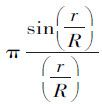

但是，对宇宙的构造的探索同时也沿着另一个颇不相同的方向前进。非欧几里得几何学的发展导致了对于这样一个事实的认识，即我们能对我们的宇宙空间的无限性表示怀疑，而不会与思维的规律或与经验发生冲突(黎曼、亥姆霍兹)。亥姆霍兹和潘加里(Poincaré)已经以无比的明晰性详细地论述了这些问题，我在这里只能简单地提一下。
首先我们设想在二维空间中的一种存在。持有扁平工具(特别是扁平的刚性量杆)的扁平生物自由地在一个平面上走动。对于它们来说，在这个平面之外没有任何东西存在；它们所观察到的它们自己的和它们的扁平的“东西”的一切经历，就是它们的平面所包含着的全部实在。具体言之，例如欧几里得平面几何学中的一切作图都可以借助于杆子来实现，亦即利用在第24节所已讨论过的格子构图法。与我们的宇宙对比，这些生物的宇宙是二维的；但同我们的宇宙一样，它们的宇宙也延伸到无限远处。在它们的宇宙中有足够的地方可以容纳无限多个用杆子构成的互相等同的正方形；亦即它们的宇宙的容积(面积)是无限的。如果这些生物说它们的宇宙是“平面”的，那么这句话是有意义的，因为它们的意思是它们能用它们的杆子按照欧几里得平面几何学作图。这里，各个个别杆子永远代表同一距离，而与其本身所处的位置无关。
现在让我们考虑一下另一种二维的存在，不过这次是在一个球面上而不是在一个平面上。这种扁平生物连同它们的量杆以及其他的物体，与这个球面完全贴合，而且它们不可能离开这个球面。因而它们所能观察的整个宇宙仅仅扩展到整个球面。这些生物能否认为它们的宇宙的几何学是平面几何学，它们的杆子同样又是其“距离”的实在体现呢?它们不能这样做。因为如果它们想实现一根直线，它们将会得到一根曲线，我们“三维生物”把这根曲线称作一个大圆，亦即具有确定的有限长度的、本身就是完整独立的线，其长度可以用量杆测定。同样，这个宇宙的面积是有限的，可以与用杆子构成的正方形的面积相比较。从这种考虑得出的极大妙处在于承认了这样一个事实，即这些生物的宇宙是有限的，但又是无界的。
但是这些球面生物无需作世界旅行就可以认识到它们所居住的不是一个欧几里得宇宙。在它们的“世界”的各个部分它们都能够弄清楚这一点，只要它们所使用的部分不太小就可以了。从一点出发，它们向所有各个方向画等长的“直线”(由三维空间判断是圆的弧段)。它们会把连接这些线的自由端的线称作一个“圆”。按照欧几里得平面几何学，平面上的圆的圆周与直径之比(圆周与直径的长度用同一根杆子测定)等于常数π，这个常数与圆的直径大小无关。我们的扁平生物在它们的球面上将会发现圆周与直径之比有以下的值

亦即一个比π小的值，圆半径与“世界球”半径R 之比愈大，上述比值与π之差就愈加可观。借助于这个关系，球面生物就能确定它们的宇宙(“世界”)的半径，即使它们能够用来进行测量的仅仅是它们的世界球的比较小的一部分。但是如果这个部分的确非常小，它们就不再能够证明它们是居住在一个球面“世界”上，而不是居住在一个欧几里得平面上，因为球面上的微小部分与同样大小的一块平面仅有极微细的差别。
因此，如果这些球面生物居住在一个行星上，这个行星的太阳系仅占球面宇宙内的小到微不足道的一部分，那么这些球面生物就无法确定它们居住的宇宙是有限的还是无限的，因为它们所能接近的“一小块宇宙”在这两种情况下实际上都是平面的，或者说是欧几里得的。从这个讨论可以直接推知，对于我们的球面生物而言，一个圆的圆周起先随着半径的增大而增大，直到达到“宇宙圆周”为止，其后圆周随着半径的值的进一步增大而逐渐减小以至于零。在这个过程中，圆的面积继续不断地增大，直到最后等于整个“世界球”的总面积为止。
或许读者会感到奇怪，为什么我们把我们的“生物”放在一个球面上而不放在另外一种闭合曲面上。但是由于以下事实，这种选择是有理由的： 在所有的闭合曲面中，唯有球面具有这种性质，即该曲面上所有的点都是等效的。我承认，一个圆的圆周C 与其半径r 的比取决于r ，但是，对于一个给定的r 的值而言，这个比对于“世界球”上所有的点都是一样的；换言之，这个“世界球”是一个“等曲率曲面”。
对于这个二维球面宇宙，我们有一个三维比拟，这就是黎曼发现的三维球面空间。它的点同样也都是等效的。这个球面空间具有一个有限的体积，由其“半径”确定之(2π2 R 3 )。能否设想一个球面空间呢?设想一个空间只不过是意味着我们设想我们的“空间”经验的一个模型，这种“空间”经验是我们在移动“刚”体时能够体会到的。在这个意义上我们能够设想一个球面空间。
设我们从一点向所有各个方向画线或拉绳索，并用一根量杆在每根线或绳索上量取距离r 。这些具有长度r 的线或绳索的所有的自由端点都位于一个球面上。我们能够借助于一个用量杆构成的正方形用特别方法把这个曲面的面积(F )测量出来。如果这个宇宙是欧几里得宇宙，则F =4πr 2 ；如果这个宇宙是球面宇宙，那么F 就总是小于4πr 2 。随着r 的值的增大，F 从零增大到一个最大值，这个最大值是由“世界半径”来确定的，但随着r 的值的进一步增大，这个面积就会逐渐缩小以至于零。起初，从始点辐射出去的直线彼此散开而且相距越来越远，但后来又相互趋近，最后它们终于在与始点相对立的“对立点”上再次相会。在这种情况下它们穿越了整个球面空间。不难看出，这个三维球面空间与二维球面十分相似。这个球面空间是有限的(亦即体积是有限的)，同时又是无界的。
可以提一下，还有另一种弯曲空间：“椭圆空间”。可以把“椭圆空间”看作这样的弯曲空间，即在这个空间中两个“对立点”是等样的(不可辨别的)。因此，在某种程度上可以把椭圆宇宙当作一个具有中心对称的弯曲宇宙。
由以上所述可以推知，无界的闭合空间是可以想象的。在这类空间中，球面空间(以及椭圆空间)在其简单性方面胜过其他空间，因为其上所有的点都是等效的。由于这个讨论的结果，对天文学家和物理学家提出了一个非常有趣的问题： 我们居住的宇宙是无限的呢，抑或像球面宇宙那样是有限的呢?我们的经验远远不足以使我们能够回答这个问题。但是广义相对论使我们能够以一定程度的确实性回答这个问题；这样，第30节所提到的困难就得到了解决。